住宿 小樽君樂酒店 (Grand Park Otaru)
2024年8月16日
- 住宿日期：2024/8/16
- 訂房方式：易遊網
- 房型：高級山景雙床房 含3份早餐 (32m2)
- 房價：台幣 4847元 + 停車費 ￥1650
因為很接近出發時間才決定要在小樽住一晚，Booking上的住宿，一般酒店的房間都已經超出預算，符合預算的幾家都是私人出租的公寓，看起來都不是很喜歡，Jalan上的小樽住宿也沒看到符合的。
最後在易遊網上找到這家價位在預算內的小樽君樂酒店。
他的位置不是在熱門的運河區或是小樽市區，是往札幌一點那個方向一點的一個港口(附近的JR站是"小樽築港")，但想說我們自駕，不住在熱鬧的地方也沒差。房間蠻大的，有32m2，
放了兩張小型雙人床和一張單人床之後還是有很寬敞的走道，但是整個裝潢和設置就比較old style一點。早餐在一樓的餐廳，面海港，風景很好，早餐種類蠻多的，很多飲料可以選（還有當地余市產的蘋果汁），
日本旅館早餐都比台灣旅館的好吃很多！對了，房間有膠囊咖啡，阿光早上做好的咖啡，我看錯保溫杯，誤以為是我前一天裝的的水而很灑脫的往水槽一倒，沒了😅。 原本以為飯店會有投幣式洗衣機，但是這家沒有。
在易遊網網站訂房時沒有看到要另外收停車費的訊息，有點扣分。但剛才去飯店官網試訂房，有明確看到要另外收停車費。當初應該也上一下官網，看直接在官網訂房有沒有房間，以及比較一下價格才對，
通常直接在官網訂房會比較便宜，而且不用先刷卡付費，當場支付即可，我們後面有另外兩家的住宿(伊達之森和函館海之燈)就是直接在官網訂的！
余市 山田園 採藍莓
2024年8月16日
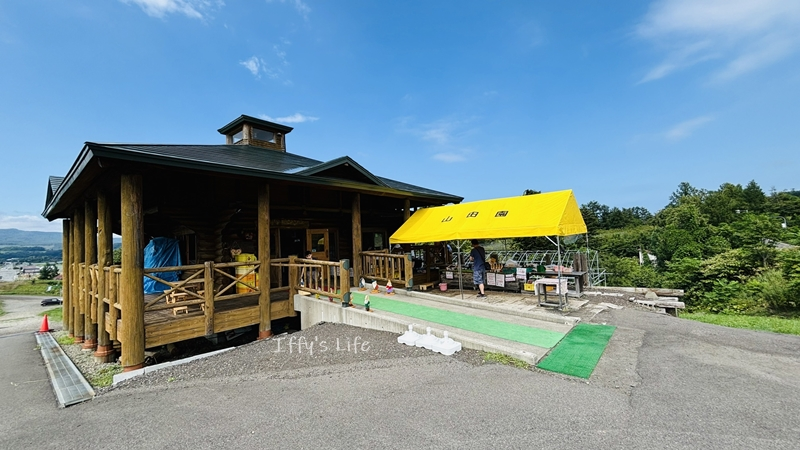
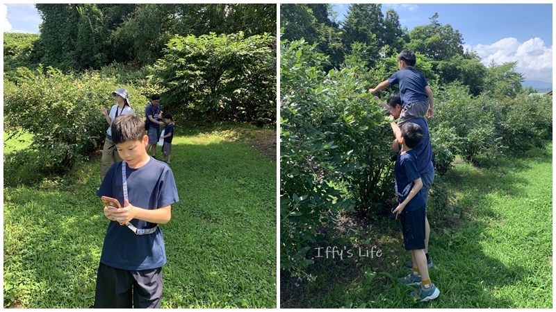
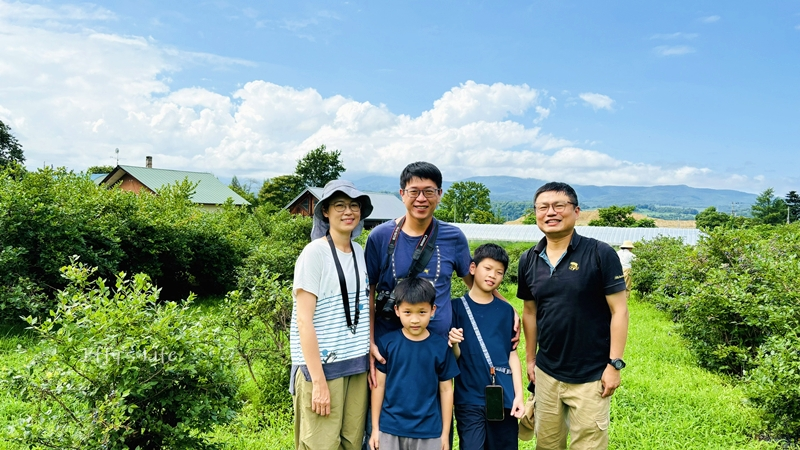
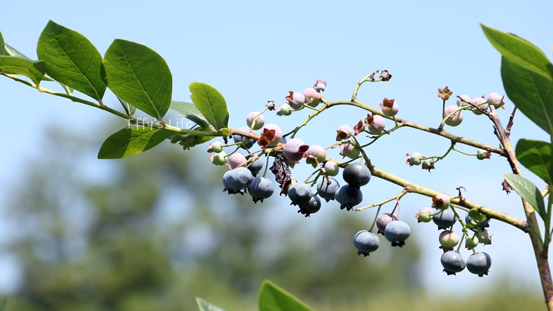
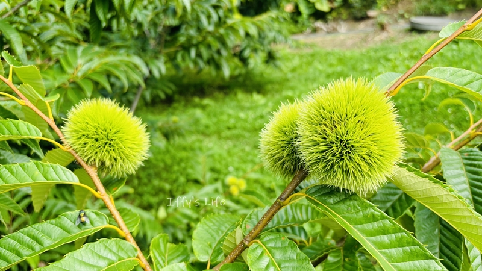
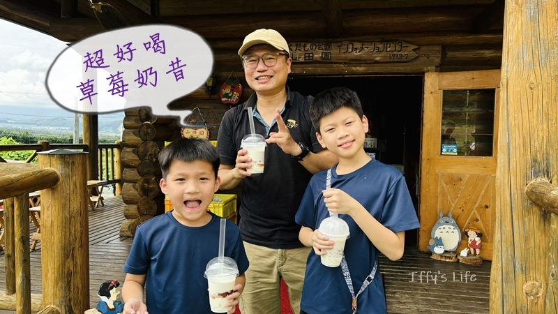
這次因為有租車，所以決定去一些不容易去的景點。一個很想去的就是青洞，另一個就是採水蜜桃！去年是七月初來的，去了富良野採櫻桃，都沒有其他遊客，我們邊採邊吃邊拍照，玩得超開心。
這次八月剛好有水蜜桃，所以我超級期待！結果去了第一個果園沒開(不知道是中午休息還怎樣，完全沒人)，雖然余市這邊很多果園，但是有水蜜桃的好像不多，臨時找不太到，
最後去了山田園，這裡也沒有水蜜桃，但是有藍莓，所以就改成採藍莓啦！費用：大人￥500，
小孩￥200(允寶只採不吃)。不限時間，現採現吃。台灣買藍莓不便宜，就想說要趁此機會多吃一點，但一直吃藍莓不會飽(我們沒有安排午餐時間^^")，也沒辦法一直吃~~。
因14:00要到塩谷參加青洞窟遊覽，所以大概待了一個小時左右。
走之前買了"李子"，很好吃耶！好友還買了果園自產的草莓果醬做的奶昔請我們喝，其實就是牛奶冰淇淋+草莓果醬+牛奶！超級好喝~~~~大推！
這個感覺吃飯店的自助晚餐或早餐時也可以自己弄一杯來喝(在日本時我怎麼都沒想到，殘念)！
塩谷 青洞窟觀光
2024年8月16日
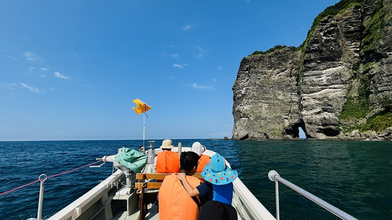
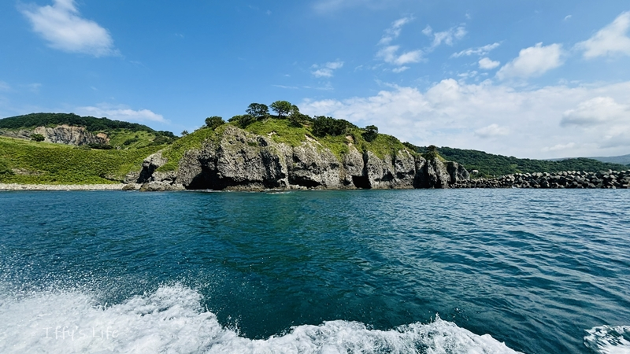
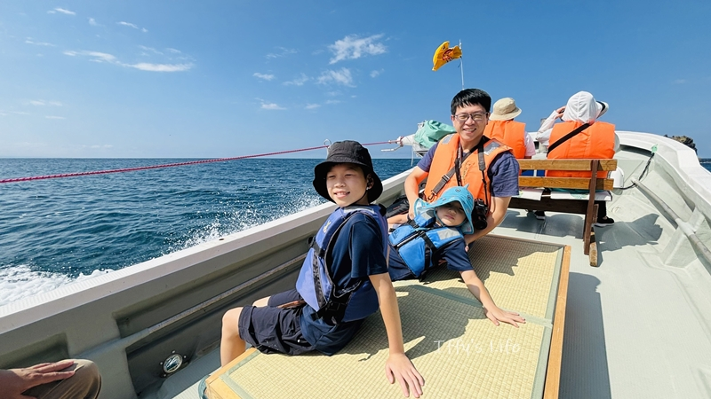
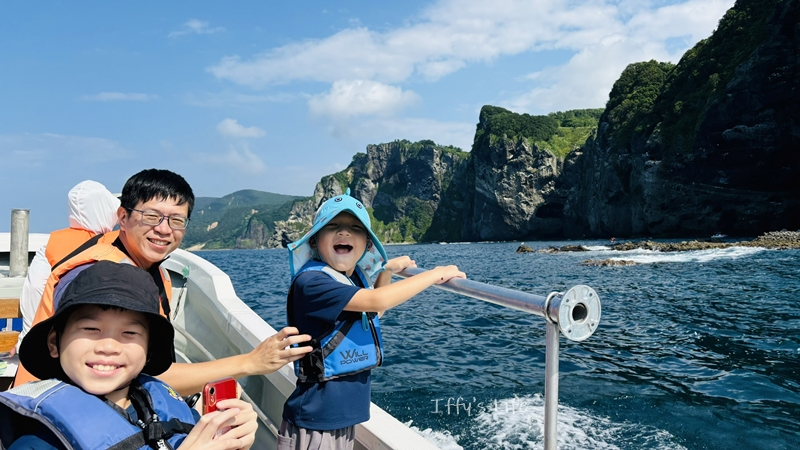
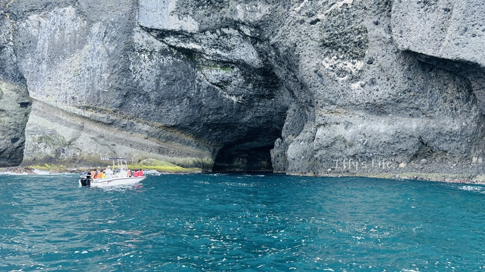
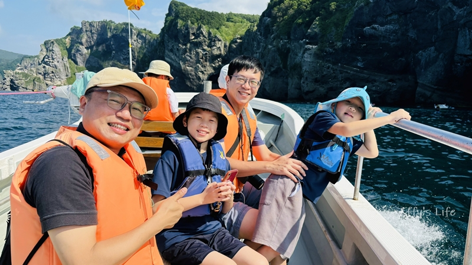
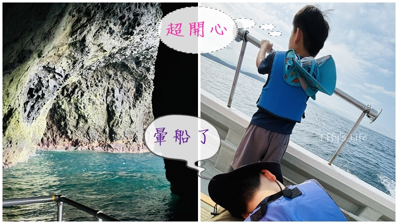
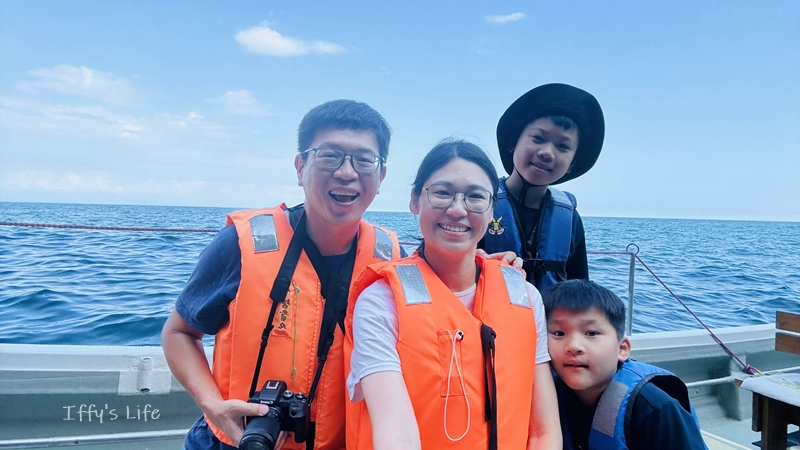
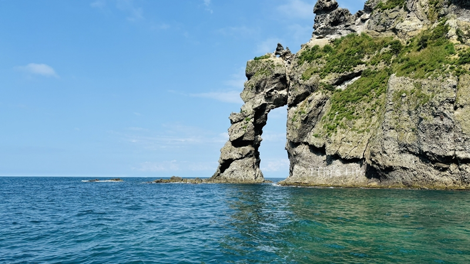
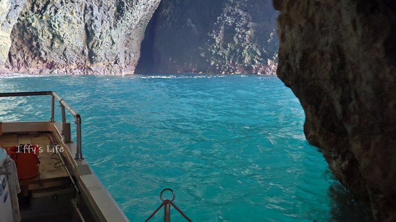
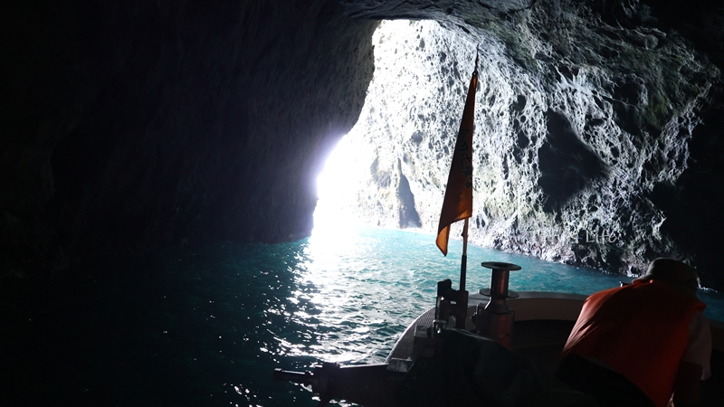
另一個很想去的就是青洞，之前去沖繩時也有去青洞浮潛和潛水，沒想到小樽也有青洞窟，
青洞形成原因是因為特殊的海蝕地形加上陽光入射的角度，使得除了藍色外，其他波長顏色的光都被吸收了，使海水透出非常純粹的藍。
出發前原本有想先預訂，但是查到的多是小樽港出發的，從小樽出發的行程比較遠，價格也比較高，試著預訂的時發現要填一堆資料，超麻煩，所以就放棄了。
google map 上有看到其實塩谷港附近也有青洞觀光船(這家)，但是網站寫只接待會日文的旅客。剛好這一天好友可以跟我們一起玩，所以這個行程我就想說等到
北海道再看看吧！一早租好車從札幌出發後就直奔塩谷，到了觀光船接待處時是個小小的屋子，但完全沒人，還好等了一會兒之後，負責的阿姨騎著腳踏車回來了，
好友就下車去幫忙詢問(附近沒有什麼停車的地方，我們先暫停在路邊)，早上的行程都已經額滿了，我們就預訂了下午兩點出發的班次。當時還有另外兩組客人，後來聽好友說是中國人，但一個似乎完全不會日文，另一個日文
沒有很好，但阿姨講話完全沒有降低語速，他們聽不懂而放棄了。但其實阿姨人很好，因為允寶突然要上廁所，阿姨還騎著腳踏車要我們開車跟著她走，帶我們去有廁所的地方。
下午兩點很興奮地搭上前往青洞的小快艇，天氣很好，海水很藍，加上海風非常舒服，而且漁港完全沒有魚腥味或是汽油味，空氣很清新。海岸線真的跟東北角很像，
只差在旁邊的山勢更高，反而有種紐西蘭峽灣的感覺。
船長邊開船邊介紹附近的地形和歷史，很快地便到達青洞窟前，但是因為一次只能通過一台小船，所以我們停在外面等待，船停下來之後不久，隨著海浪晃動，我就開始暈船啦！
出發前還想說距離很短，又是小快艇，應該不會暈，沒想到有停船等待的時間，暈船大魔王就來了！央央長大後就很容易暈，所以開船沒多久之後他就半躺在塌塌米的座位上，
允寶超強，完全不暈，上次去小琉球時搭交通船他也不暈，還超開心。阿光這次有找到訣竅，他說看遠的地方，所以他這次小暈而已，好友跟我一樣也暈船了，所以後半船長講什麼都
聽不進去，實在太不舒服啦！
實際進去青洞窟的時間很短，可能只有5分鐘吧！沒有預期中很透藍、很驚豔的美，感覺很普通耶~~ 還是說要潛到水下往上看才會更有感覺?從洞窟出來之後
又往前開了一段，介紹了周圍岩石特色之後才返航，整個行程大概花費了一個小時的時間。去除後半暈船的部分，整個體驗還是蠻好的。費用的話，大人是￥4000，小孩￥2000，學齡前免費(允寶免費)，這次允寶真的賺很多，
還沒上小一，很多觀光景點都是不用門票的。
積丹 食事処 純の店
2024年8月16日
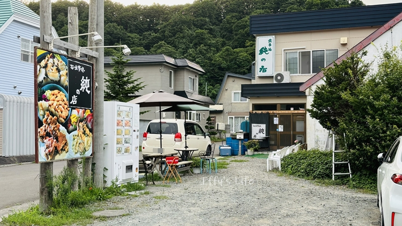
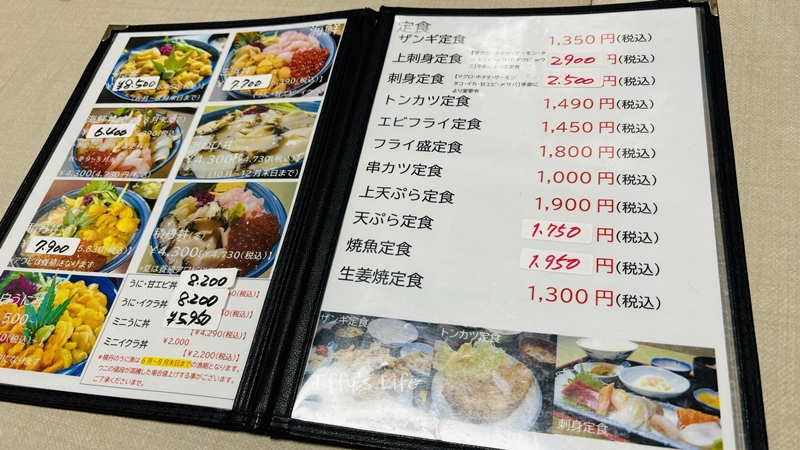
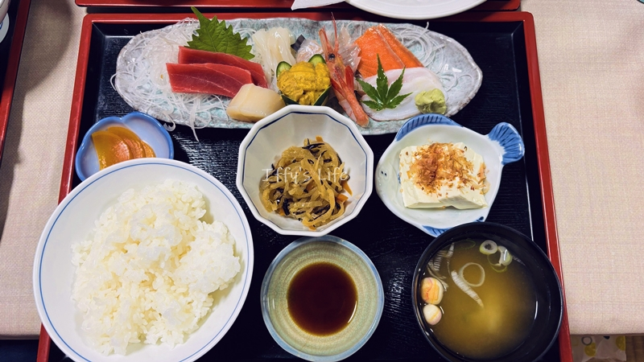
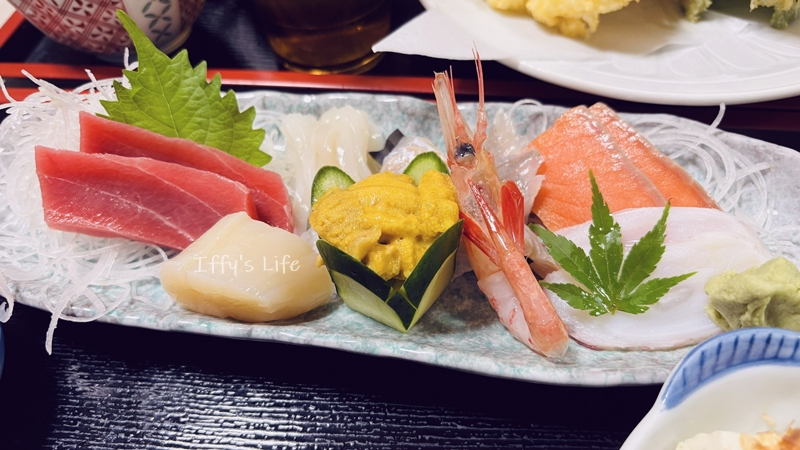
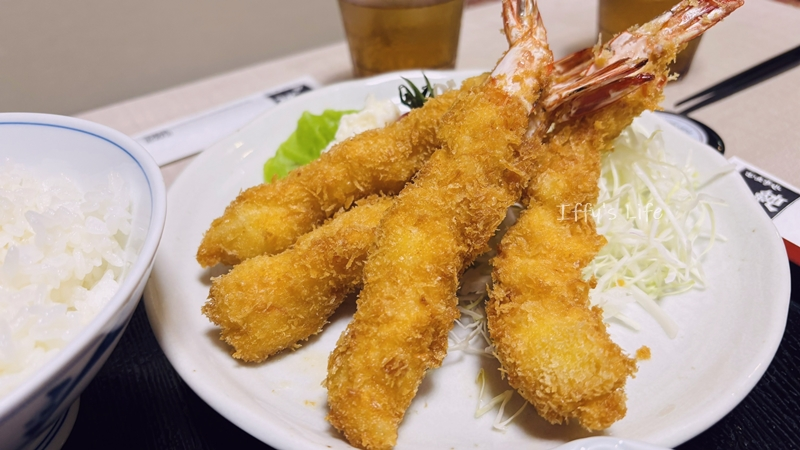
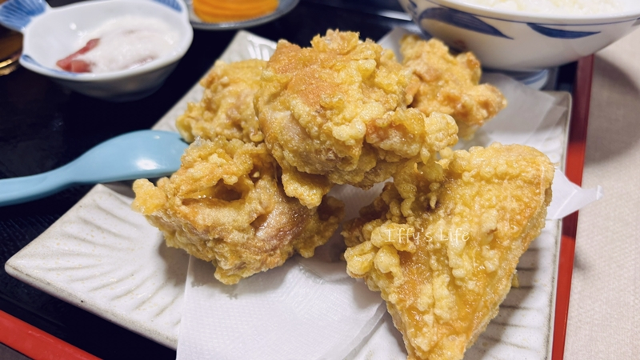
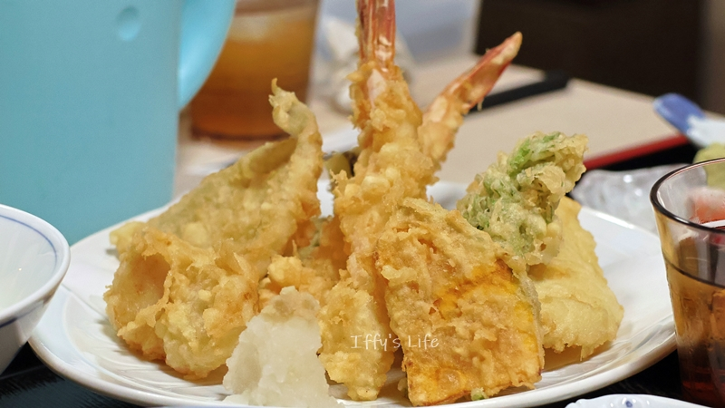
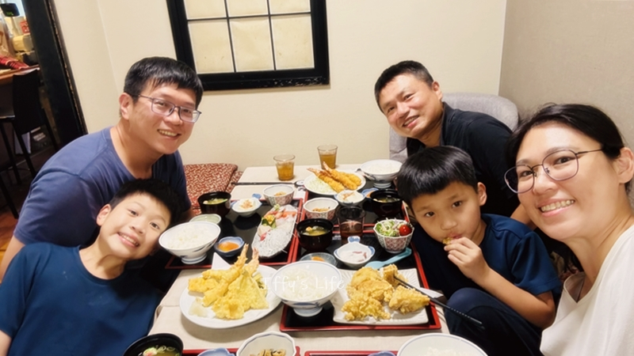
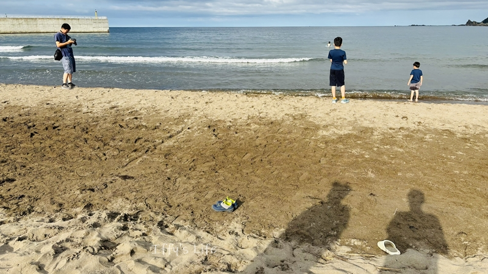
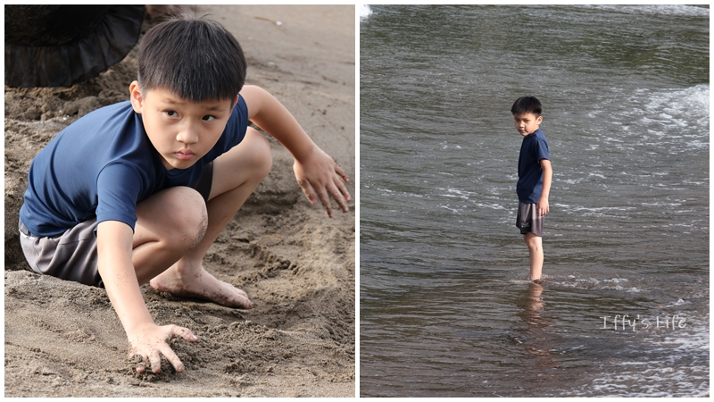
下午3:00結束小樽青洞窟的行程，要趕緊找地方吃飯。因為我原本有想要去神威岬，但評估之後覺得路途太遠，折衷在地圖上選了積丹附近的黃金岬，
所以就在google map上尋找這附近下午沒休息的店，而發現了這家食事処 純の店。
我們大概下午3:30抵達，卻發現它是休息的狀態，寫著下午4:30才開始營業，不過門口有放候位單，先填了候位單之後，決定到附近海岸走走逛逛，等時間差不多再回來。
原本以為是看海的峭壁，但是導航到一個漁港的角落，沒有路可以開上去，只好改去附近另一個看起來是公園的綠地，結果是個沙灘海水浴場，日本人都在沙灘搭帳篷玩水、烤肉！
允寶當然馬上也衝去玩水、玩沙。等16:30再回到餐廳，原本以為還沒到吃飯時間不會有什麼人，沒想到已經有好幾組人也在等待了。
我們是候位第一組，餐廳內走道其實蠻小的，我們坐在一個和式半開放包廂內，我和阿光都點了生魚片定食、央央點天婦羅定食、允寶吃炸雞定食、好友點炸蝦定食，每個人都吃得超滿足！
生魚片超級新鮮，種類也很多，終於吃到美味的海膽了！！沒有海味、不是海水鹹味，而是甜的。允寶的炸雞超級大塊！又多汁。央央對他的炸天婦羅稱讚不已！好友也說炸蝦非常好吃！
現點現做，感覺有等個15~20分鐘才開始出餐，我們大個吃了一個多小時，用完餐出來時外面有一組客人在等待，他們進去後，老闆就關店啦！掛出本日營業終了的牌子！才17:30左右而已說！
(goole map 上寫的營業時間是到19:00，18:00 來的人不就哭哭了嗎？這裡不是很熱鬧的觀光區，似乎只是一個小住宅區，沒有什麼人，所以來用餐的應該都是特別過來的客人。)
小樽 天狗山夜景
2024年8月16日
從積丹回到小樽也要約一個小時的車程，先送好友到JR車站搭車回札幌，我們再到飯店check in。稍微休息一下之後就出發往天狗山看夜景啦！
一路開車上山還蠻暗的，停車場也沒有什麼燈，從停車場走到纜車站那邊的展望台也很黑暗，沒有人有點可怕！我們到了之後沒多久，纜車站就關了。
央央趁纜車站關之前，請工作人員等我們投自動販賣機買飲料換零錢，然後進去扭了一隻塑膠蛇。小樽的夜景也蠻不錯的，
加上纜車站已關，沒什麼人很安靜。可惜下過雨，椅子濕濕的無法坐下來欣賞。燈都關得差不多了，周圍一片黑暗，因此拍完夜景之後，
我們沒有停留很久就準備下山回旅館了。往停車場走的時候看到一旁的廣告牌，發現有"斜坡滑車"可以玩，營業時間10:00~17:00，
肖战的法瑞vlog裡也有玩這種滑車，我也好想玩玩看啊~~~
也有高空滑索可以玩，然後還有花栗鼠公園，有超可愛的花栗鼠，天狗山這邊感覺也是可以花個半天的時間好好遊覽、體驗一番的，
但這次我們在小樽主要的行程是青洞觀光跟採水果，就犧牲了天狗山這邊的體驗了。
天狗山詳細資訊可以到官網查詢，
有繁體中文的PDF可以下載。
當時心想明天白天說不定可以再上山一次，結果隔天早上起來，外面下著毛毛細雨，我們便按照預定行程直接往旭川出發啦！